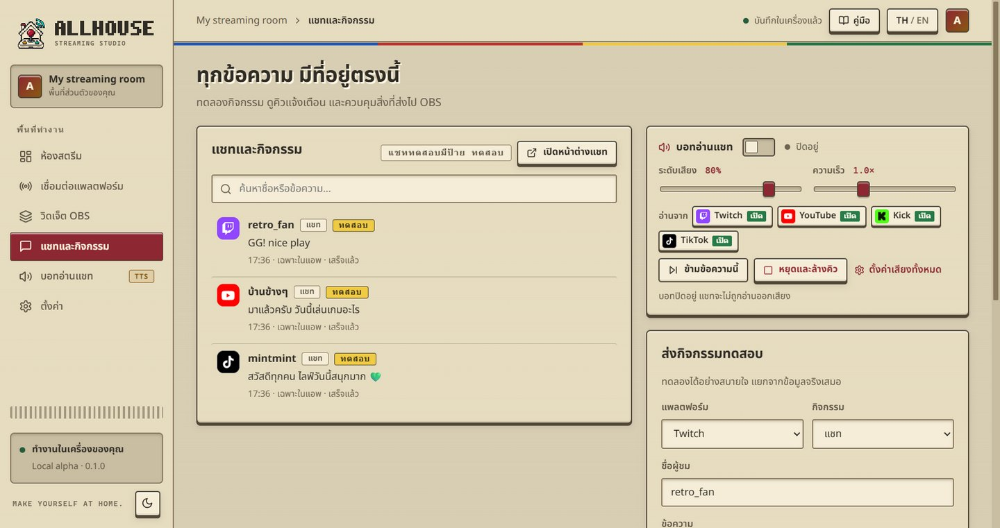
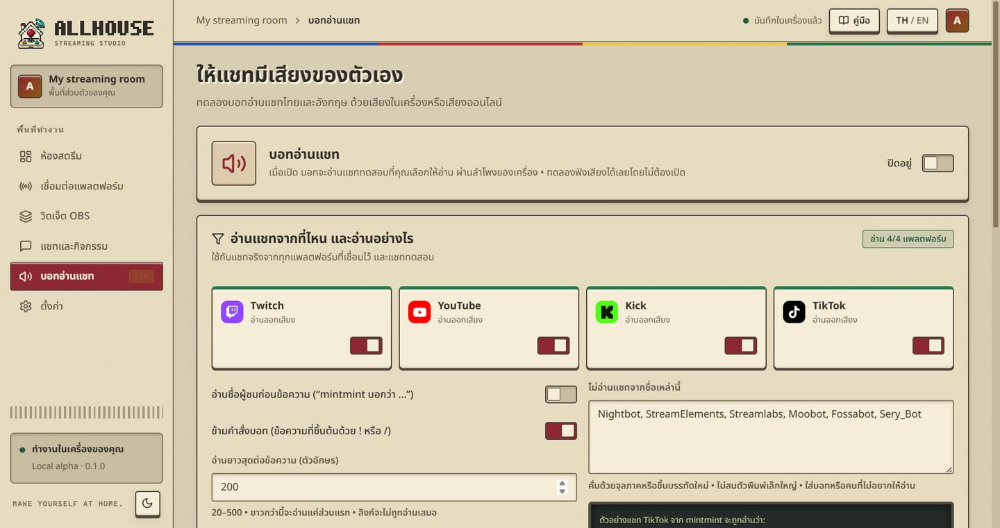
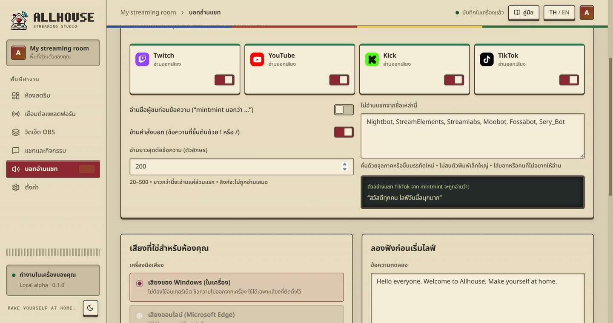

แชทจากทุกแพลตฟอร์มมารวมที่เดียว และให้บอทอ่านออกเสียงเฉพาะที่คุณต้องการ

ค้นหาพิมพ์ชื่อหรือข้อความเพื่อกรองรายการเปิดหน้าต่างแชทหน้าต่างแนวตั้งสำหรับอ่านแชทอย่างเดียว ปักไว้บนสุดได้ ปรับขนาดตัวอักษรด้วย A- / A+ส่งกิจกรรมทดสอบเลือกแพลตฟอร์ม ชนิด (แชท ติดตาม สมาชิก ของขวัญ) ชื่อและข้อความ เลือกว่าจะแสดงแค่ในแอพหรือส่งไป OBS ด้วยคิวการแจ้งเตือนพักคิว / ข้าม / ล้างคิว ใช้ตอนมีการแจ้งเตือนรัวๆ หรืออยากหยุดชั่วคราว
เสียงของ Windowsฟรี ไม่ต้องใช้อินเทอร์เน็ต ข้อความไม่ออกจากเครื่อง ใช้ได้เฉพาะเสียงที่ติดตั้งใน Windowsเสียงออนไลน์เสียงไทยธรรมชาติ (Premwadee / Niwat) ฟรี ต้องใช้อินเทอร์เน็ต ข้อความแชทจะถูกส่งไปบริการของ Microsoft ต้องกดยอมรับก่อนใช้ไทย + อังกฤษแอพแยกส่วนภาษาไทยกับอังกฤษในข้อความเองอัตโนมัติ และใช้เสียงที่ตรงภาษาความเร็ว / ความดังปรับได้ทั้งในหน้านี้และบนแถบควบคุมในหน้าแชทหยุดและล้างคิวหยุดเสียงที่กำลังอ่านและทิ้งข้อความที่รออยู่ทั้งหมดทันทีเสียงบอทออกที่ลำโพงเครื่องนี้ ถ้า OBS จับ Desktop Audio อยู่ ผู้ชมจะได้ยินเสียงบอทด้วย (รวมถึงตอนทดลองฟัง)

เปิด/ปิดแต่ละแพลตฟอร์มแพลตฟอร์มที่ปิดเสียง แชทยังแสดงในแอพและบน OBS ตามปกติ แค่บอทไม่อ่าน (สลับเร็วได้จากปุ่ม “อ่านจาก” บนแถบควบคุมเสียง)อ่านชื่อผู้ชมก่อนเช่น “mintmint บอกว่า …”ข้ามคำสั่งบอทไม่อ่านข้อความที่ขึ้นต้นด้วย ! หรือ / เช่น !pointsไม่อ่านชื่อเหล่านี้ใส่ชื่อบอทหรือคนที่ไม่อยากให้อ่าน คั่นด้วยจุลภาคหรือขึ้นบรรทัดใหม่อ่านยาวสุด20–500 ตัวอักษรต่อข้อความ ยาวกว่านี้อ่านแค่ส่วนแรก ลิงก์ไม่ถูกอ่านเสมอกฎชุดนี้ใช้กับแชททดสอบด้วย ลองตั้งค่าแล้วส่งแชททดสอบ (เปิด “ให้อ่านแชททดสอบด้วย”) ก่อนไลฟ์ได้
Allhouse 0.1.0 · Local alpha · คู่มือนี้อยู่ในเครื่องของคุณ เปิดได้โดยไม่ต้องใช้อินเทอร์เน็ต